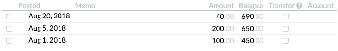

Debt
If you are trying to pay off debt, there are a few things Buckets can offer you.
Mortgage/Loan
Many users treat fixed-payment credit (e.g. mortgages and car loans) as expenses to the budget rather than accounts within the budget. It makes sense to mark these kinds of debt accounts as Off Budget rather than Debt.
Credit Cards and Other Debt
If you always pay off your credit card in full every statement, then you are safe to leave your credit card account as a Normal account.
If, however, you are trying to pay off a credit card balance, it may be helpful to mark the account as Debt. Click the account details and change the account type from Normal to Debt.
Debt Accounts
Changing an account to a Debt account causes two things to happen:
- The account’s negative balance is removed from your total rain.
- A debt payment bucket is automatically created.
1. Rain without Debt
Suppose you have the following account balances:
| Account | Balance |
|---|---|
| Credit Card | -3,000 |
| Checking | 2,000 |
| Total | -1,000 |
If your Credit Card account is a normal account, in order to get your Rain to 0, your bucket balances will have to total to -1,000 also. For example:
| Bucket | Balance |
|---|---|
| Food | -250 |
| Rent | -500 |
| Clothing | -250 |
| Total | -1,000 |
Budgeting with a bunch of negative amounts doesn’t match reality, though. In real life, you would never allocate a negative amount for food. So, when you mark an account as Debt it removes that debt from your rain amount so that you can budget like this:
| Bucket | Balance |
|---|---|
| Food | 750 |
| Rent | 1,000 |
| Clothing | 250 |
| Total | 2,000 |
2. Debt Payment Bucket
The debt payment bucket will mirror every transaction into your account. For instance:
- if you deposit $50 into your debt account, the payment bucket balance will decrease by $50 indicating that your pending payment has gone down.
- if you withdraw $50 from your debt account, the payment bucket balance will increase by $50 indicating that your pending payment has gone up.
You are also welcome to put additional funds into the debt payment bucket as you have them.
Syncing the payment balance with the billing cycle
Credit cards can have very complicated billing cycles. And even the simplest cycles can create confusion. In the simplest case, you’ll have one billing cycle’s payment due just as the next billing cycle ends, as shown here:
If you’re using a Debt account, this means that your debt payment bucket can often include money meant for 2 or more cycles at once. Here are some tips to help ease the confusion:
Pay off each billing cycle as close to the end date as you can. This limits the amount of overlap with other cycles.
The first month you use a Debt account, just before you make your first payment, add your payment amount to the debt payment bucket.
For instance, if your debt payment bucket has accumulated $400 and you’re about to pay $600 for the previous billing cycle, first add $600 to your debt payment bucket to bring the balance to $1000. Make your payment and the balance should now reflect the amount due on your next cycle.
Consult the debt payment bucket’s transaction list and use the balance at the end of the previous billing cycle as your payment amount.
For instance, if your billing cycle ends on the 4th of the month, though your bucket might have $690 in it now, at the end of the previous billing cycle it only had $450. Pay $450 rather than $690. 
Always double check that the amount you plan to pay matches what you’ve been billed.
Another Great Idea
You’ll have more success paying off your debt if you budget for it. Consider these two ideas:
- Create an additional recurring expense bucket and choose an amount to pay toward your debt every month. After making it rain each month, transfer the balance to the debt payment bucket.
- After making it rain each month, put any extra money into the debt payment bucket.
Next
Read about app-wide stuff.